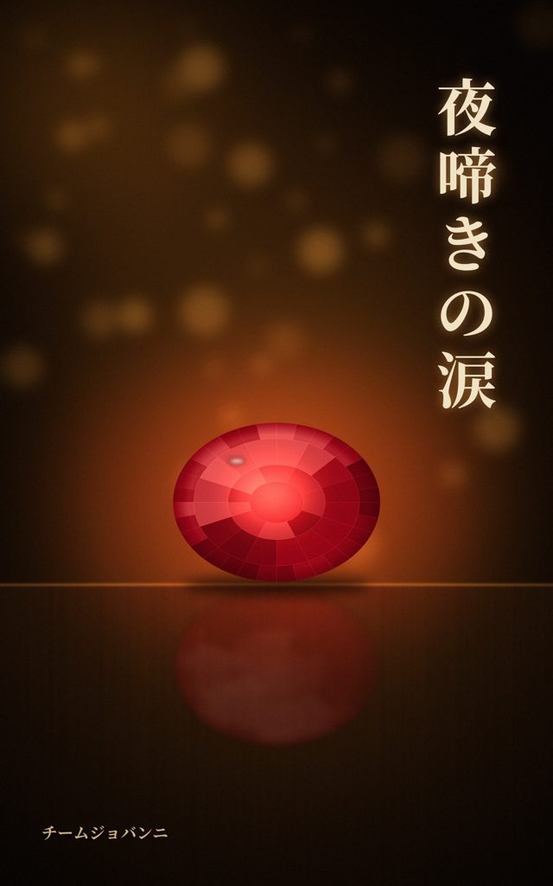
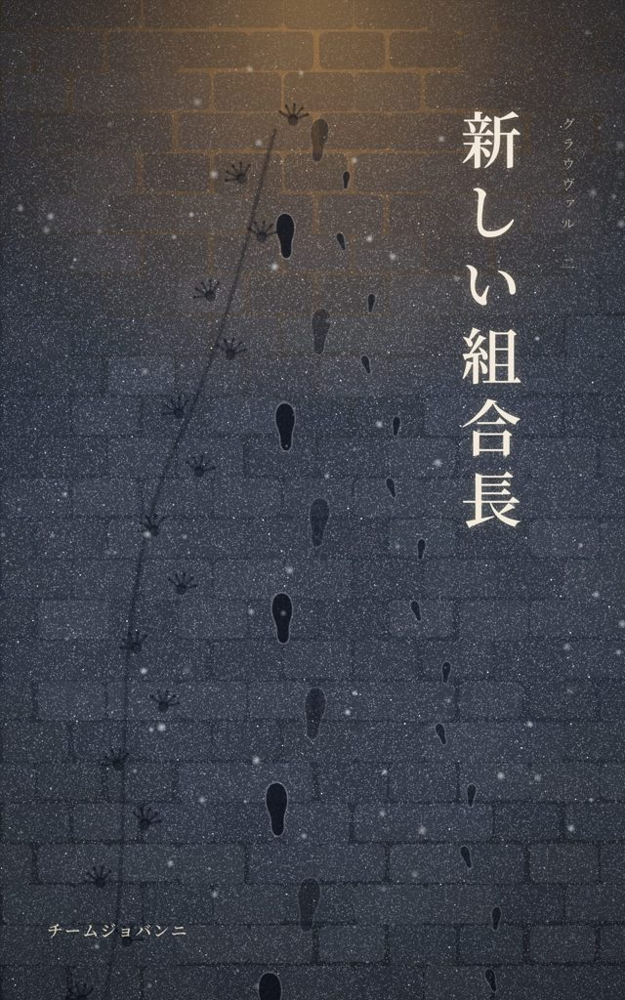
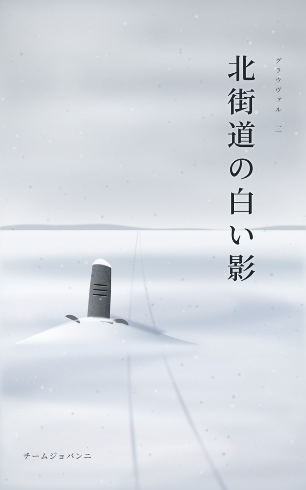

連作ファンタジー 毎月一話
城塞都市グラウヴァル。冒険者組合の一階にある酒場「錆び釘亭」を舞台に、組合と街の人びとに起きたことを、一話ずつ描いていく連作です。
どの話からでも読めます。縦書きの電子書籍版（Romancer）と、横書きの連載版（小説家になろう）があります。中身は同じです。

第一話
ロズモンド夫人の宝石が盗まれた。犯人は冒険者ギルドの中にいるらしい。夜、城塞都市の門は閉ざされ、朝まで誰も出入りできない。嘘の作法が決まったこの世界で、一夜のうちに盤面は何度もひっくり返る。

第二話
冒険者組合に、新しい組合長がやってきた。元弓使いで、参事会の書記だったエーリカ・ランゲ。着任早々に届いたのは「亜人の組合員を登録簿から外せ」という内示だった。誰も嘘をつかずに、内示は退けられる。代わりに、紙の上に一つ、寒い言葉が残る。

第三話
師走。北の寒村に足止めされた徴税役を迎えに出た隊商が、北街道で消えた。剣士ダリオと新しい仲間たちは、冬の荒れ野へ出る。赤い棘草と雪の原、遠くに上がる一筋の煙、野盗の頭目、一里塚の下の古い地下道。城壁の外を旅する冒険の回。
第四話
雪が解けるまで、錆び釘亭はひと休み。次の話は来月ここに並びます。